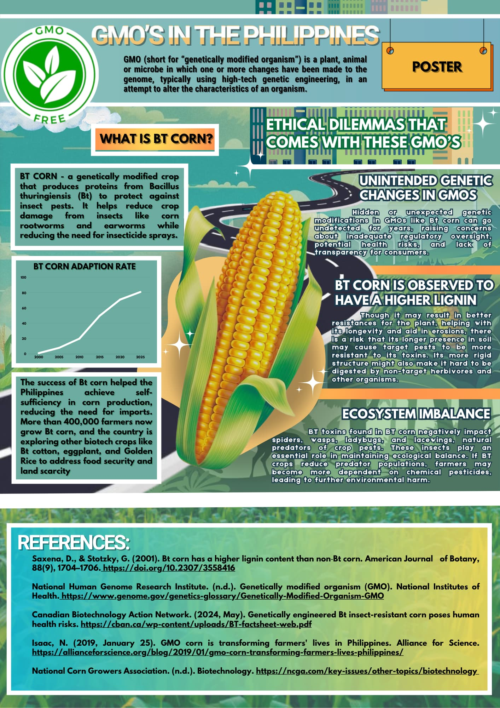
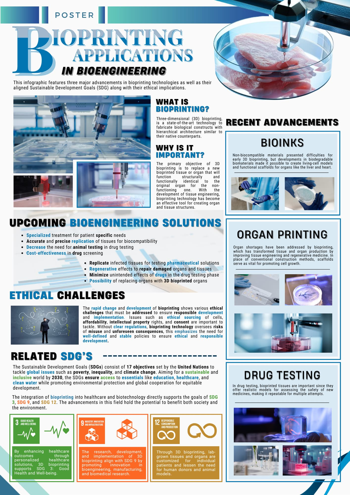
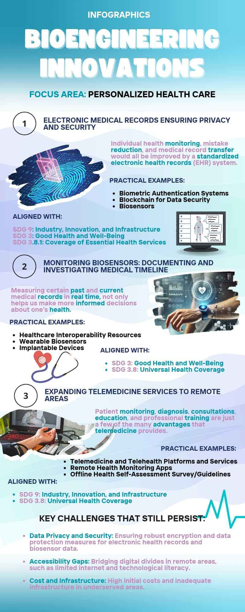

4th year Computer Engineering student at FEU Institute of Technology, Philippines
I build embedded and IoT systems and I am growing my skills in cybersecurity. I am looking for an internship where I can apply both.
Vegetation Environment Recognition and Detection Engine. An IoT hydroponics monitoring and control system for lettuce.
A web map of student services built as a group project.
A non-commercial fan-made website built in Wix. Designed the layout and page structure. All characters belong to their original creator, and this project is not affiliated with or endorsed by them.
Visit siteDatabase design project covering schema design, normalization, and a Flask backend.
Group project for STS. I designed the poster in Canva and compiled the content, with research input from my group. Covers Bt corn in the Philippines and the ethical issues around GMOs.

Group project for STS. I designed the poster in Canva and compiled the content, with research input from my group. Covers bioprinting advances, ethical challenges, and SDGs 3, 9, and 12.

Group project for STS. I designed the infographic in Canva and compiled the content, with research input from my group. Covers electronic health records, biosensors, and telemedicine, mapped to SDGs 3 and 9.

BS Computer Engineering, FEU Institute of Technology, Philippines
Expected graduation: 2027